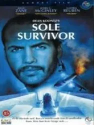

The genetics
Genetic engineering is behind the plot. The secret Quartermass project genetically engineers children, described in one summary as clones, to give them paranormal powers such as healing and mind control, with the aim of producing children who can be used and controlled as weapons. The leaders of the project and their hired killers are the villains: the plane crash that killed Joe's family and the murders of witnesses all follow from the hunt for the children. The only sympathetic scientist is Rose Tucker, a former researcher who betrays the project to save one of the children and dies for it. The film, based on a novel by Dean Koontz, uses genetic engineering as a source of supernatural powers, which has no basis in real science, and its message is a warning about experimenting on children for military ends.
How genetics is portrayed
- Overall portrayal of genetics
- negative Genetic engineering of children for military use is shown as a nefarious enterprise that brings death and grief; the only good scientist is the one who turns against it.
- Outcome of the genetic intervention
- negative The engineered children are treated as weapons; the hunt for them causes the plane crash, the murders of witnesses and the deaths of Rose and the boy 89-58, although the girl survives and gives Joe closure.
- Quartermass organization and its project leaders
- villain Aim: military, power (negative). They engineer children with paranormal powers to produce controllable weapons and are ready to kill them; their pursuit of the escaped girl leaves a trail of deaths. The film calls the organization nefarious and frames its agents as the antagonists.
- Rose Tucker
- hero Aim: benevolent (positive). A former researcher on the project, she flees with the girl 21-21 to save her from the project's leaders. The film presents her as a protector and whistleblower who dies at the hands of Yates's men.
The story
A year after his wife and young daughter died in a plane crash, the reporter Joe Carpenter meets Rose Tucker at their grave. Rose was on the passenger list but claims to have survived. She explains that she was a researcher on a secret project of the Quartermass organization, which created children with paranormal powers, and that she fled with one of them, a girl known as 21-21 who can heal people and let them see the afterlife, because the project's leaders wanted controllable children for military use. The girl saved them both from the crash by briefly moving them into another dimension. Rose is hunted by Victor Yates, a former CIA agent turned mercenary who has been killing scientists and witnesses. Rose is shot and dies. Another child from the project, the mind-controlling boy 89-58, forces Yates to shoot himself and dies too. Joe rescues the girl, names her Nina and starts a new life with her.